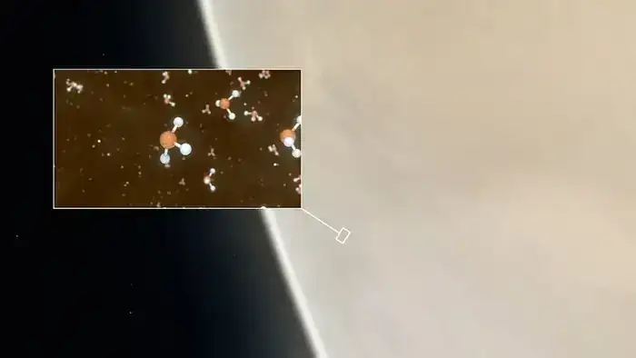
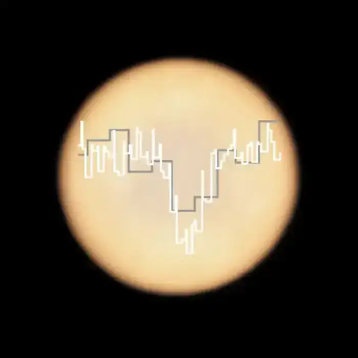
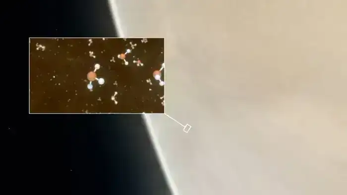

The claim
In September 2020, a team led by Jane Greaves reported phosphine in Venus's cloud decks, detected in the James Clerk Maxwell Telescope and ALMA data at about 20 parts per billion. On Earth, phosphine is produced by anaerobic microbes and industry; on Venus, no known chemistry makes it in those quantities.
Maps, diagrams and images






The result was carefully hedged by its authors — a possible biosignature, not evidence of life — and it was reported far less carefully by everyone else.
The takedown
The immediate objection was spectroscopic: the phosphine line sits close to a sulfur dioxide absorption feature, and the ALMA data were processed in a way that may have introduced a false signal. Reanalyses found the detection significance dropping sharply, in some cases to nothing.
The original team published a revised analysis with a much weaker claim. Subsequent work has argued both ways — some independent groups report a residual signal in reprocessed data, others find the line explained entirely by SO₂ and calibration effects.
Because Venus's clouds are the most habitable place in the solar system outside Earth: 30–60 km up, the pressure and temperature are close to terrestrial, and the sulfuric acid droplets are a plausible solvent for exotic chemistry.
And because the underlying puzzle has not gone away. Even at reduced significance, the reported abundances are hard to explain with known Venus chemistry, which is why the argument is about measurement rather than about what would follow if it were true.
The honest label is 'live debate' — the detection is contested, the interpretation is speculative, and nobody has produced a decisive measurement either way. NASA's DAVINCI and VERITAS missions, and ESA's EnVision, will make the atmospheric measurements that matter.
What would settle it
A direct atmospheric probe with a mass spectrometer — not remote sensing — measuring phosphine and its isotopes in situ. Isotopic ratios would distinguish biological from geological production, if anything is there at all.
Until then: a single contested line, a lot of careful spectroscopy, and a planet that has been misread before. Venus was once described as a swamp; the lesson of that error is that remote inference about Venus is hard.
Sources for this page
- Greaves et al. (2021), phosphine in the Venusian cloudswww.nature.com
- Wikipedia, “Phosphine” — the Venus detection and its reanalysesen.wikipedia.org
- NASA, DAVINCI mission to Venusscience.nasa.gov
- ESA, EnVision missionwww.esa.int
Open resources on this topic
- PapersOpen-access articles: DOAJ · PubMed Central · Internet Archive Scholar
- BooksPublic-domain and borrowable copies: Open Library · Project Gutenberg · Google Books · Internet Archive
Cite this page
Momin, S. (2026). Phosphine on Venus. The Larger World Archive. https://drsamonline.github.io/LARGE_GLOBE/phosphine-venus.htmlMomin, Sohil. “Phosphine on Venus.” The Larger World Archive, 2026, https://drsamonline.github.io/LARGE_GLOBE/phosphine-venus.html.Momin, Sohil. “Phosphine on Venus.” The Larger World Archive, 2026. https://drsamonline.github.io/LARGE_GLOBE/phosphine-venus.html.@misc{phosphine2026phosphine,
author = {Momin, Sohil},
title = {Phosphine on Venus},
year = {2026},
howpublished = {The Larger World Archive},
url = {https://drsamonline.github.io/LARGE_GLOBE/phosphine-venus.html},
note = {Last reviewed 20 November 2026}
}Last reviewed 20 November 2026 · Corrections policy · this page is not peer reviewed